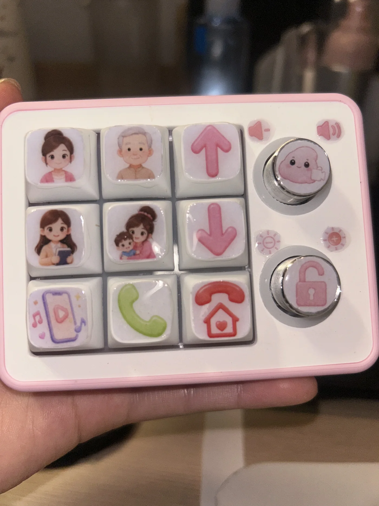
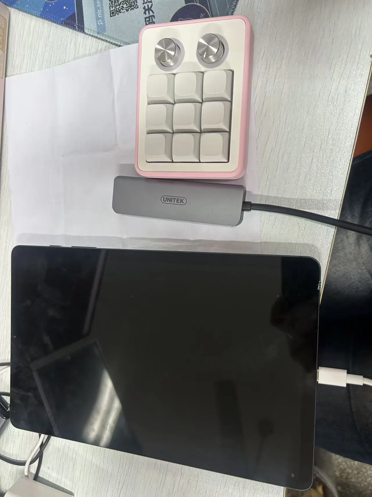
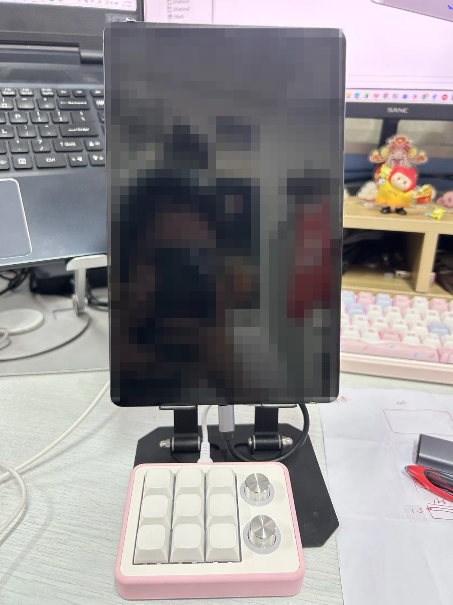
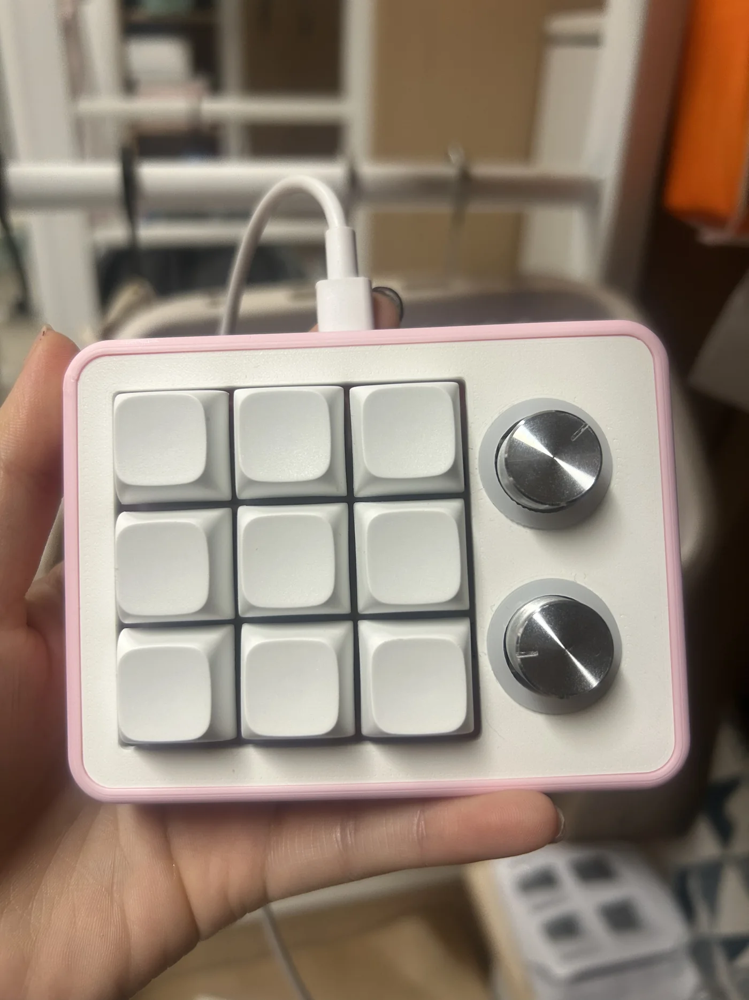
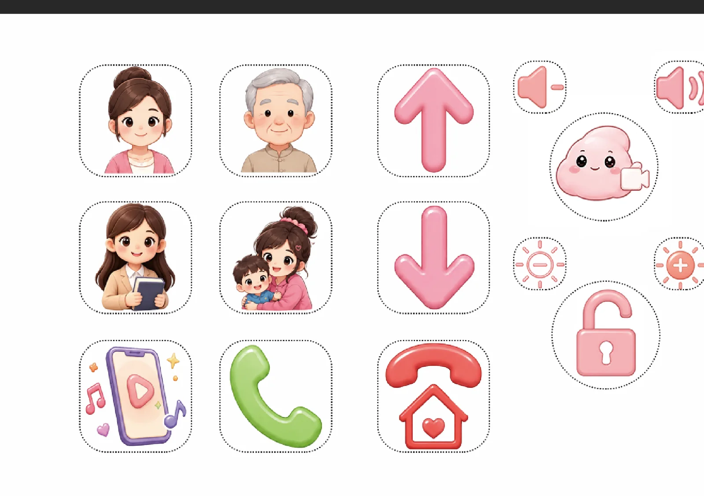
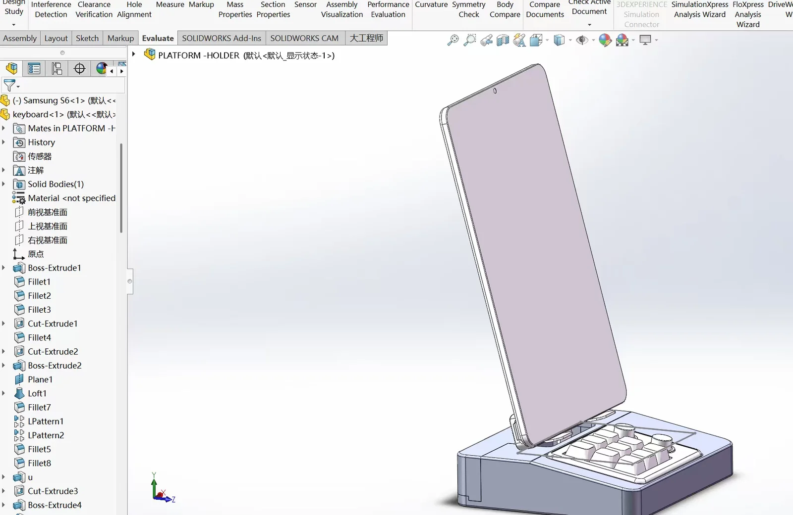
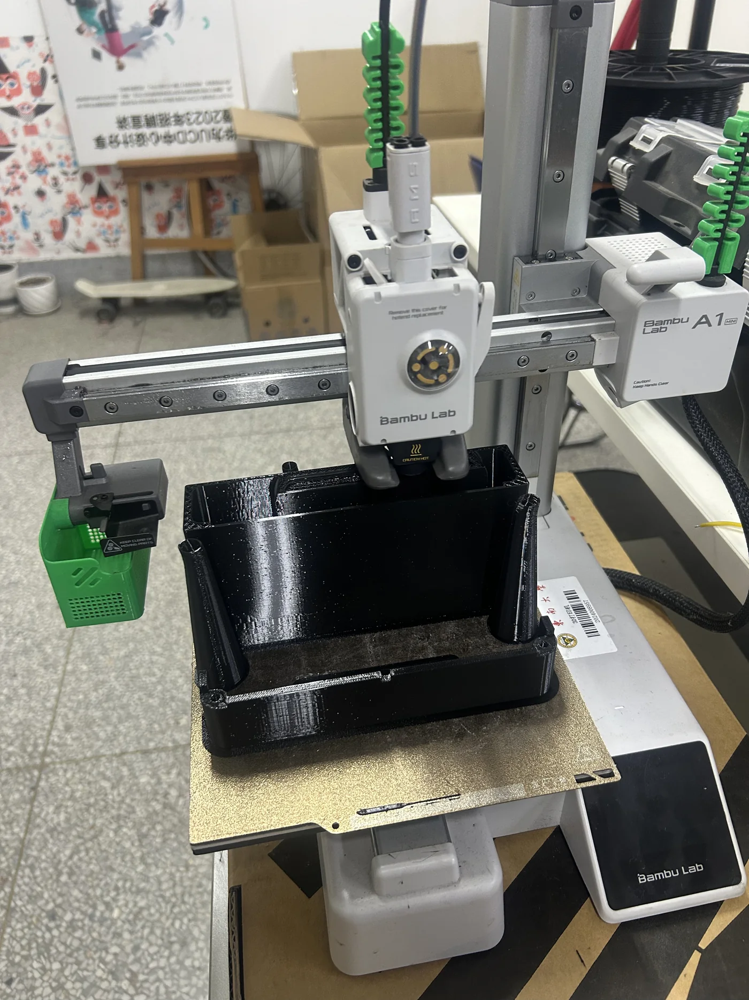
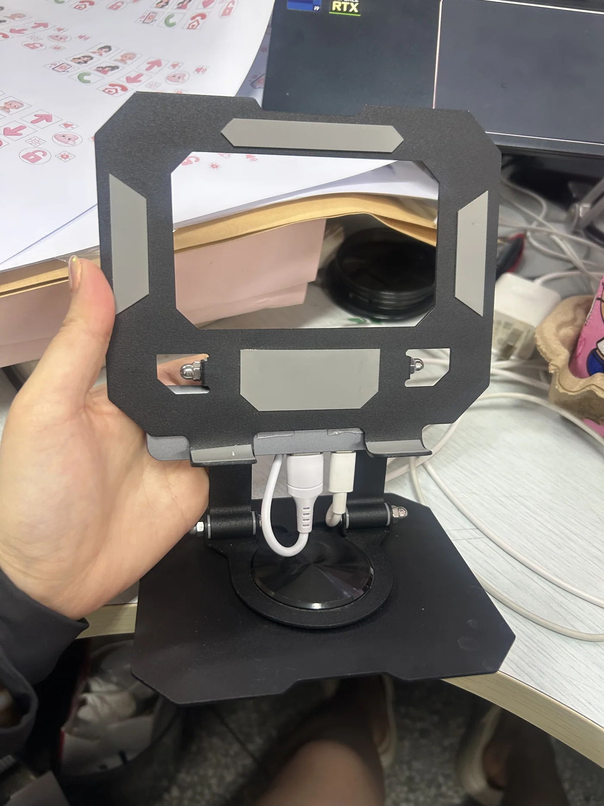
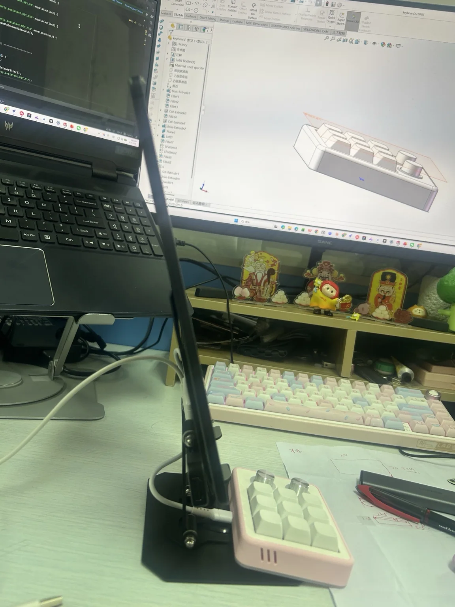

Large display
Keep faces and call states legible from a comfortable viewing distance.
SELF-INITIATED PRODUCT · 2026
I turned a family need into a working prototype: a large-screen Android tablet paired with a custom physical controller for one-press video calls, answering, entertainment, and voice-assistant access.

My grandparents live independently and find touch-screen video calling difficult.
Map recurring tasks to fixed physical keys on a large-screen device.
A working prototype covering calls, answering, Douyin, Doubao, brightness, and volume.
01 / CONTEXT
I wanted to see my grandparents more often, and I wanted them to be able to see me without waiting for another family member to operate a phone. Existing smart displays suggested the right direction, but their smaller screens and touch-first interaction still asked too much of users who were more comfortable with physical controls.
Design questionHow might one physical press replace a sequence of small targets, changing screens, and uncertain call states?

02 / DESIGN RESPONSE
Keep faces and call states legible from a comfortable viewing distance.
Give each frequent task a stable location, distinct icon, and tactile press.
Let software handle app launching, waiting, screen changes, and recovery steps.
03 / BUILD PROCESS
I wrote a concise PRD covering users, call states, button mappings, system architecture, acceptance criteria, known risks, and product boundaries. The core requirement was simple: recurrent tasks should complete from a single, predictable press.

I started with a programmable nine-key controller. Large illustrated labels replaced abstract key codes: four family shortcuts, directional controls, entertainment, answer, and home/end-call. Two rotary controls support volume and brightness.


An Android AccessibilityService listens for mapped actions, checks the active app and call state, and then finds accessible UI nodes or uses a coordinate fallback. The prototype covers one-press contact calls, incoming-call answer or reject, end call, Douyin navigation, Doubao video, screen wake, brightness, and volume.
I modeled a combined base for the tablet stand and controller, then 3D-printed the enclosure. Cables and electronic parts sit inside the protective shell so the everyday setup presents one screen and one control surface rather than exposed components.



04 / WORKING PROTOTYPE
66-second functional demonstration. Faces, contact details, and personal shortcuts have been blurred; background noise has been reduced.
Call four familiar contacts
Answer an incoming WeChat call
Reject or end a call, then return home
Previous, next, and open Douyin
Open Doubao video interaction
Adjust volume and brightness

WHAT THIS PROJECT SHOWS
This is a family prototype rather than a broadly validated product. Its value lies in the complete practice: noticing a specific accessibility problem, defining the system, designing the interaction, writing and testing the software, modeling the enclosure, fabricating it, and placing the result in the real setting that motivated it.
Return to portfolio↙